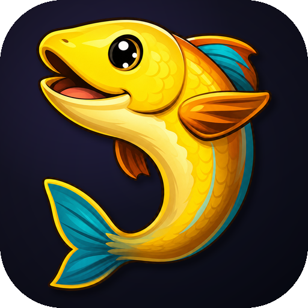

Match context
Keep the current phase, team context, and session state easy to scan without repeatedly switching windows.

LeagueJaxA desktop companion for League of Legends players, built around match context, player lookup, replays, and lightweight update-aware tools.
Windows x64 installer. Direct links resolve to the latest release when release metadata is available.
Live session
Recent history
62% last 20 matchesUpdate source
GitHub / Gitee direct installer linksLeagueJax focuses on the repeated desktop tasks before, during, and after a League of Legends session.
Keep the current phase, team context, and session state easy to scan without repeatedly switching windows.
Review recent matches and inspect player information for review and organization, not automated decision-making.
Keep useful information visible in a lighter form designed to be readable and low interruption.
Centralize replay management and practical client-side companion actions as the project evolves.
LeagueJax keeps its public shell, interface, foundation, and public project materials available while leaving some core implementation outside the public repository to reduce low-effort repackaging.
License
GPL-3.0 Public source files and assets are governed by the repository license. Non-public components are not included in the public repository.LeagueJax is connected to League Akari's partial open-source direction. It is an independent project for learning and practicing Tauri desktop development while building a tool shaped around my own workflow.
LeagueJax is unofficial and is not affiliated with, sponsored by, or endorsed by Riot Games, Tencent Games, or League of Legends.